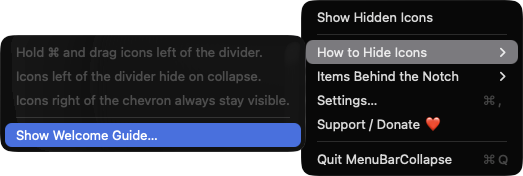
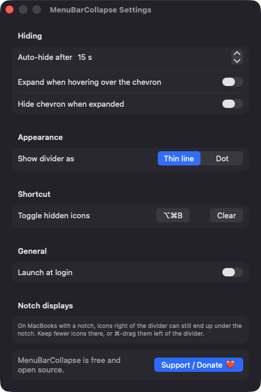
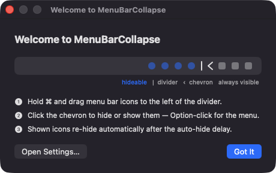

Hide icons with a divider
Command-drag icons to the left of the divider and collapse the bar to push them off screen. The chevron points left when expanded and right when collapsed.
Open source · macOS 14+ · Universal binary · Menu Bar Utility
MenuBarCollapse is a tiny divider that tucks crowded menu bar icons out of sight and brings them back on demand. Click the chevron or press the global hotkey, Option-Command-B.
Free & MIT licensed · Apple Silicon & Intel · Latest release

Features
Everything it does is built on public macOS APIs, with no accounts, no network access and no background services.
Command-drag icons to the left of the divider and collapse the bar to push them off screen. The chevron points left when expanded and right when collapsed.
The bar collapses again after a delay you choose, from 5 to 600 seconds in 5-second steps, or turn the timer off.
Toggle from any app with Option-Command-B by default. Record your own shortcut in Settings, or clear it.
Optionally reveal hidden icons when the pointer reaches the chevron. You can also hide the chevron while the bar is expanded.
Icons are restored if you quit while collapsed. If the divider ends up right of the chevron, collapsing is refused and the menu tells you how to fix it.
Choose a thin line or a dot for the divider, and launch at login if you like. It runs as an accessory app with no Dock icon.
Screenshots


Install
MenuBarCollapse is open source and not notarized with a paid Apple Developer ID, so macOS needs one extra step the first time.
xattr -cr /Applications/MenuBarCollapse.app
Download
Free, forever. Built for macOS 14 Sonoma or newer, Apple Silicon and Intel.
Not notarized: on first launch right-click MenuBarCollapse.app → Open.
FAQ
Yes. It is released under the MIT license and the full source is on GitHub. There are no accounts, no ads and no paid tier. If it is useful to you, there is an optional Support button in the app.
None for core use. It does not ask for Accessibility or Screen Recording, because collapsing only changes the length of its own status item. It may ask to post a notification if your menu bar is too crowded to show its icons, and macOS may ask you to approve Launch at login.
Only on your Mac. Your settings are saved in the app's standard macOS preferences, and the app makes no network connections. Menu bar ordering is kept by macOS itself.
Notarization requires a paid Apple Developer account, and this is a free project. Right-click the app and choose Open once to get past Gatekeeper, or build it yourself from source with Xcode.
Support ❤️
MenuBarCollapse is a free, open-source alternative to paid utilities. If it earns a spot on your Mac, a coffee keeps the updates coming.
☕ Support Or on Ko-fi